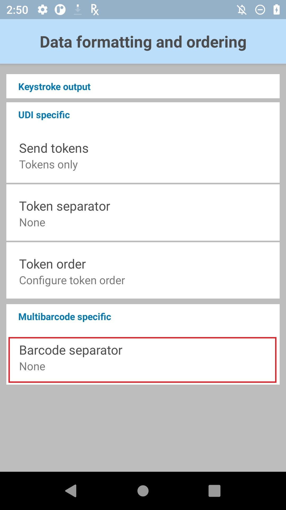

Overview
Keystroke Output collects the processed data and sends it to the associated application as a series of keystrokes, emulating the actions of a user pressing keys on the device. DataWedge supports TAB, ENTER and other special characters that might be required by an application to submit acquired data for further processing, to advance the cursor to another input field or for other reasons. Special characters are added to acquired data by using the Action key character (shown below) and in the Basic Data Formatting or Advanced Data Formatting Process functions.
The parameters of this feature can be configured using Set Config API.
For Android 10 and higher, the default keyboard disappears briefly during a scan and reappears after the data is delivered to the app. This is due to DataWedge using its own InputMethodService to dispatch data.
Outputting Raw Data
In addition to its normal plain-text and hexadecimal modes, DataWedge can output acquired data in its raw form, before the application of any encoders. This can be useful if custom encoders are needed for acquiring character sets not supported by Zebra.
Raw data is received as a byte stream using the com.symbol.datawedge.decode_data intent extra. For more information, see the Intent Output guide.
Raw data cannot be output as keystrokes.
Keystroke Output Setup
To enable Keystroke output for a Profile, place a check in the checkbox:
Keystroke Output options
Action key character - enables injection of a special character embedded within barcode, serial, RFID, voice or MSR data. Possible values:
- None - inject no action key
- Tab - inject action key in place of a ASCII Tab (0x09) character
- Line feed - inject action key in place of ASCII LF (0x0A) character
- Carriage return - inject action key in place of ASCII CR (0x0D) character
Key event options - sends keystrokes as key events, sends certain key events as string, and controls key event delays. Options:
Key event delay - set a delay (in ms) prior to the key event being sent. Used for dispatching control characters as keystrokes to the foreground application. This parameter is useful when sending data containing text as well as key events, where key events are sent asynchronously causing data to be delivered in the incorrect order. In this circumstance, it is recommended to add a key event delay to correct the order of data delivery.
Send Characters as Events - set to send ASCII code 32 to 126 as key events
Send Enter as string - set to send ENTER key stroke output as a string. By default, this is disabled and ENTER is sent as a key event.
Send Tab as string - set to send TAB key stroke output as a string. By default, this is disabled and TAB is sent as a key event.
Send Control Characters as Events - set to send ASCII code 1 to 31 as key events. By default, this is disabled and the data is sent as a string. Refer to ASCII Control Character Table for a mapping of ASCII Control Characters to Android KeyEvents. Android applications can listen to key events using onKeyUp() and onKeyDown() APIs. However, web applications listen to these key events using DOM (Document Object Model) - they do not generate Android key press events. For example, when scanning a barcode in a web browser, if the barcode contains Ctrl+F character it does not open a Find window. Similarly, if the barcode contains Ctrl+H it does not open the History window.
Inter-character delay – used to set a delay (in ms) following the delivery of each character to the application. This parameter is intended to help avoid issues that arise when data is dispatched too quickly for an application to accept. Default=0. If experiencing errors in keystroke delivery, increase this value in increments of 100 (to a max. of 1000) until errors cease. Note: This parameter can negatively effect application performance.
Multi-byte character delay - applies the Inter-character delay (described above) to multi-byte characters only. This parameter is intended to help avoid problems that arise when sending Unicode and multi-byte characters to the Android browser. Available only when Inter-character delay is enabled. Disabled by default.
DataWedge keyboard options - used to display the DataWedge "keyboard" (a DataWedge icon that displaces the default keyboard) when dispatching keystroke data and set the time period for the duration the DataWedge keyboard is displayed. Applies to Android 10 or higher, in which the default keyboard disappears during a scan and reappears after the data is delivered to the app. By enabling this feature, when a scan is performed the default keyboard is displaced with the DataWedge keyboard when dispatching data. After data dispatch is complete and the timeout elapses, the keyboard is switched back to the default keyboard. Zebra recommends to enable this option in the following situations:
- When it is required to automatically move to the next text field with ENTER/TAB key after each scan (from Basic Data Formatting settings) in a webpage or Android application.
- When it is required to prevent the default keyboard from appearing during a continuous scan session.
DataWedge keyboard options:
- Display DataWedge keyboard - enable/disable the visibility of DataWedge keyboard. DataWedge keyboard shows a graphical user interface when this option is turned on. Note: Enabling/Disabling this option will not change the configurations in Android system Language and Input settings.
- Keyboard display timeout - used to set the amount of time (in seconds) the keyboard should remain visible after a scan. Default value is 10 seconds. This timeout applies only when Display DataWedge keyboard is enabled. Users can tap on the keyboard UI if required to switch back to the previous keyboard before the timeout elapses. Setting the timeout value to 0 results to an infinite timeout. The keyboard does not switch to the previous keyboard unless the user taps on the DataWedge keyboard UI or there is a profile switch.
Profile Import Behavior
For Profiles imported into DataWedge 6.7 (and higher) from prior versions, the value specified for the "Multi byte character delay" is applied to the Inter-character delay and the “Delay Multi-byte characters only” parameter is enabled.
For Profiles created with DataWedge 6.7 (and higher) and imported into a prior version, the specified delay, if any, is applied only to multi-byte characters.
UDI Data Output
This setting applies when the Scanning mode in Barcode Reader Params is set to UDI, which acquires multiple data points (tokens) as specified in the Universal Device Identifier parameter(s) selected in the above-referenced section.
Support for UDI barcodes has been restored to Zebra devices running Android 10 with BSP 10.12.13 "Update 17" (or later).

Token selection - allows the output order of acquired UDI data to be adjusted and the optional insertion of a Tab, Line Feed or Carriage Return character between tokens, if required.
To adjust UDI Token settings:
1. Tap "Send tokens" to select the desired output for acquired UDI data.

Tokens only - DataWedge parses the UDI data into separate Tokens for output (separated by a separator character, if selected).
Barcodes and tokens - DataWedge sends the barcode string appended by the tokenized data. If no separator character is selected (see Step 2), DataWedge sends two instances of the same data.
2. Tap "Token separator" in the Token selection screen to specify a separator character to be inserted between Tokens, if desired. If "Barcode and tokens" mode is selected, the selected character also is inserted between the two.
This setting is not available if "Send tokens" is disabled.
3. Tap "Token order" to include/exclude Tokens from the output and adjust their output order.
Drag tokens to adjust output order.
Programmatically configure UDI Data Output and retrieve the configuration:
GS1 Parsing Data Output
This setting applies when GS1 Parsing is enabled.
To configure GS1 Parsing Data Output:
- In the DataWedge profile, under Keystroke Output, scroll down to GS1/Digital Link specific.
- Tap Send tokens.
- Select the desired output for acquired GS1 Parsing data for the Send tokens option:
- Tokens only - The data is parsed into separate tokens for output (separated by a separator character, if selected). * Barcodes and tokens - The barcode string is sent appended by the tokenized data. If no separator character is selected (see Step 2), DataWedge sends two instances of the same data.
- Tap Token separator under GS1/Digital Link specific. In the Token selection screen, select a separator character to be inserted between tokens, if desired. If Barcodes and tokens is selected for Send tokens, the selected character is also inserted between the two. This setting is not available if Send tokens is disabled.
- Tap Token order under GS1/Digital Link specific to enable/disable tokens (GS1 Application Identifiers) from the output. Drag tokens to adjust the output order.
| GS1 Application Identifier data formatting. | ||
To programmatically configure GS1/Digital Link Data Output and retrieve the data, use:
GS1 Digital Link Output
This setting applies when Digital Link Parsing is enabled for GS1 Digital Link barcodes.
To configure GS1 Digital Link Data Output:
- In the DataWedge profile, under Keystroke Output, scroll down to GS1/Digital Link specific.
- Tap Send tokens.
- Select the desired output for acquired GS1 Digital Link data for the Send tokens option:
- Tokens only - The GS1 Digital link data is parsed into separate tokens for output (separated by a separator character, if selected). * Barcodes and tokens - The barcode string is sent appended by the tokenized data. If no separator character is selected (see Step 2), DataWedge sends two instances of the same data.
- Tap Token separator under GS1/Digital Link specific. In the Token selection screen, select a separator character to be inserted between tokens, if desired. If Barcodes and tokens is selected for Send tokens, the selected character is also inserted between the two. This setting is not available if Send tokens is disabled.
- Tap Token order under GS1/Digital Link specific to enable/disable tokens (GS1 Application Identifiers) from the output. Drag tokens to adjust the output order.
| GS1 Application Identifier data formatting. | ||
To programmatically configure GS1/Digital Link Data Output and retrieve the data, use:
MultiBarcode Data Output
This setting applies when the Scanning mode in Barcode Reader Params is set to MultiBarcode, which simultaneously acquires the number of barcodes (from 2-10) specified in the corresponding reader parameter.
To configure MultiBarcode output:
Tap "Data formatting and ordering" to specify a separator character to be inserted between the data from each barcode.
Tap "Barcode separator" to specify the desired insertion character (CR, LF or TAB).
This adds a separator in between each barcode and appends a separator after the last barcode. To remove the extra separator after the last barcode, use the "Remove characters" action from Advanced Data Formatting rules.
Data from each barcode is otherwise concatenated and delivered as a single string of keystrokes. 
To configure a custom separator character as the MultiBarcode separator:
Select a supported default character (CR, LF, or TAB) as a MultiBarcode separator together with the Advanced Data Formatting plugin configuration to replace this selected character with a user specified character. The following steps replaces "TAB" with "+" as the custom separator character:
- Tap "Data formatting and ordering" to specify a separator character to be inserted between the data from each barcode.
- Tap "Barcode separator" to specify the desired insertion character (CR, LF or TAB). In this case, select TAB.
Data from each barcode is otherwise concatenated and delivered as a single string of keystrokes. - Tap back to return to the main profile screen. Select Advanced data formatting

- Under "Keystroke output" click Enable (tap on the checkbox). Tap Rules.

- Tap Rule0.

- Tap Actions to configure.

- From the hamburger menu at the top right, select “New action”.

- Scroll down and tap “Replace string”.

- Tap “Replace String”.

- Tap "Find String".

- Enter the hexadecimal notation for tab: \x09. Tap OK.

- Tap "Replace String".

- Enter desired string to use as replacement, for example "+". Tap OK.

- Tap back to return to the rule.
- Tap and hold the horizontal bars next to "Replace string" and drag it above "Send Remaining".

- Tap back.
When performing a scan, each barcode in the MultiBarcode decode is now followed by a plus "+" character.
Hexadecimal Data Output
Hex data is based on the encoded data received from the scanner framework after it's converted from its raw form to the selected character set. When the hex-output option is selected, the plain-text string is converted to the corresponding hex digits and output as a string. That hex data can be acquired programmatically.
The Java command below returns the hex data stored in the keystroke or intent output string:
String hex = Hex.encodeHex(data.getString(DATA_STRING_TAG).toCharArray(), false);
For more information and to enable hex output using the DataWedge UI, see Basic Data Formatting (BDF).
ASCII Control Character Table
Table mapping of ASCII Control Characters (range: 1-31) to Android KeyEvents:
| Control Keys | Decimal | Control Character Name | Description | Key Events |
|---|---|---|---|---|
| Ctrl-A | 1 | Start of Heading | Used as the first character of a heading | KeyEvent { action=ACTION_DOWN, keyCode=KEYCODE_A, scanCode=0, metaState=META_CTRL_LEFT_ON, flags=<>, repeatCount=0, eventTime=<>, downTime=<>, deviceId=<>, source=0x0 } KeyEvent { action=ACTION_UP, keyCode=KEYCODE_A, scanCode=0, metaState=META_CTRL_LEFT_ON, flags=<>, repeatCount=0, eventTime=<>, downTime=<>, deviceId=<>, source=0x0 } |
| Ctrl-B | 2 | Start of Text | Precedes text and used to terminate a heading | KeyEvent { action=ACTION_DOWN, keyCode=KEYCODE_B, scanCode=0, metaState=META_CTRL_LEFT_ON, flags=<>, repeatCount=0, eventTime=<>, downTime=<>, deviceId=<>, source=0x0 } KeyEvent { action=ACTION_UP, keyCode=KEYCODE_B, scanCode=0, metaState=META_CTRL_LEFT_ON, flags=<>, repeatCount=0, eventTime=<>, downTime=<>, deviceId=<>, source=0x0 } |
| Ctrl-C | 3 | End of text | Terminates a text | KeyEvent { action=ACTION_DOWN, keyCode=KEYCODE_C, scanCode=0, metaState=META_CTRL_LEFT_ON, flags=<>, repeatCount=0, eventTime=<>, downTime=<>, deviceId=<>, source=0x0 } KeyEvent { action=ACTION_UP, keyCode=KEYCODE_C, scanCode=0, metaState=META_CTRL_LEFT_ON, flags=<>, repeatCount=0, eventTime=<>, downTime=<>, deviceId=<>, source=0x0 } |
| Ctrl-D | 4 | End of transmission | Indicates the conculsion of the text transmission | KeyEvent { action=ACTION_DOWN, keyCode=KEYCODE_D, scanCode=0, metaState=META_CTRL_LEFT_ON, flags=<>, repeatCount=0, eventTime=<>, downTime=<>, deviceId=<>, source=0x0 } KeyEvent { action=ACTION_UP, keyCode=KEYCODE_D, scanCode=0, metaState=META_CTRL_LEFT_ON, flags=<>, repeatCount=0, eventTime=<>, downTime=<>, deviceId=<>, source=0x0 } |
| Ctrl-E | 5 | Enquiry | Used as a request for a response | KeyEvent { action=ACTION_DOWN, keyCode=KEYCODE_E, scanCode=0, metaState=META_CTRL_LEFT_ON, flags=<>, repeatCount=0, eventTime=<>, downTime=<>, deviceId=<>, source=0x0 } KeyEvent { action=ACTION_UP, keyCode=KEYCODE_E, scanCode=0, metaState=META_CTRL_LEFT_ON, flags=<>, repeatCount=0, eventTime=<>, downTime=<>, deviceId=<>, source=0x0 } |
| Ctrl-F | 6 | Acknowledge | Transmitted by receiver as an affirmative response to the sender | KeyEvent { action=ACTION_DOWN, keyCode=KEYCODE_F, scanCode=0, metaState=META_CTRL_LEFT_ON, flags=<>, repeatCount=0, eventTime=<>, downTime=<>, deviceId=<>, source=0x0 } KeyEvent { action=ACTION_UP, keyCode=KEYCODE_F, scanCode=0, metaState=META_CTRL_LEFT_ON, flags=<>, repeatCount=0, eventTime=<>, downTime=<>, deviceId=<>, source=0x0 } |
| Ctrl-G | 7 | Bell | Used when there is a need to call for attention | KeyEvent { action=ACTION_DOWN, keyCode=KEYCODE_G, scanCode=0, metaState=META_CTRL_LEFT_ON, flags=<>, repeatCount=0, eventTime=<>, downTime=<>, deviceId=<>, source=0x0 } KeyEvent { action=ACTION_UP, keyCode=KEYCODE_G, scanCode=0, metaState=META_CTRL_LEFT_ON, flags=<>, repeatCount=0, eventTime=<>, downTime=<>, deviceId=<>, source=0x0 } |
| Ctrl-H | 8 | Backspace | Moves active position one character position backwards on the same line | KeyEvent { action=ACTION_DOWN, keyCode=KEYCODE_H, scanCode=0, metaState=META_CTRL_LEFT_ON, flags=<>, repeatCount=0, eventTime=<>, downTime=<>, deviceId=<>, source=0x0 } KeyEvent { action=ACTION_UP, keyCode=KEYCODE_H, scanCode=0, metaState=META_CTRL_LEFT_ON, flags=<>, repeatCount=0, eventTime=<>, downTime=<>, deviceId=<>, source=0x0 } |
| Ctrl-I | 9 | Horizontal tabulation | Advances the active position to the next pre-determined character position on the same line | Managed by Send Tab as String/Event due to Android defined constant for Tab key |
| Ctrl-J | 10 | Line feed | Advances the active position to the same character position of the next line | Managed by Send Enter as String/Event due to Android defined constant for Enter key |
| Ctrl-K | 11 | Vertical tabulation | Advance the active position to the same character position on the next pre-determined line | KeyEvent { action=ACTION_DOWN, keyCode=KEYCODE_K, scanCode=0, metaState=META_CTRL_LEFT_ON, flags=<>, repeatCount=0, eventTime=<>, downTime=<>, deviceId=<>, source=0x0 } KeyEvent { action=ACTION_UP, keyCode=KEYCODE_K, scanCode=0, metaState=META_CTRL_LEFT_ON, flags=<>, repeatCount=0, eventTime=<>, downTime=<>, deviceId=<>, source=0x0 } |
| Ctrl-L | 12 | Form feed | Advances the active position to the same chracter position on a pre-determined line of the next form or page | KeyEvent { action=ACTION_DOWN, keyCode=KEYCODE_L, scanCode=0, metaState=META_CTRL_LEFT_ON, flags=<>, repeatCount=0, eventTime=<>, downTime=<>, deviceId=<>, source=0x0 } KeyEvent { action=ACTION_UP, keyCode=KEYCODE_L, scanCode=0, metaState=META_CTRL_LEFT_ON, flags=<>, repeatCount=0, eventTime=<>, downTime=<>, deviceId=<>, source=0x0 } |
| Ctrl-M | 13 | Carriage return | Moves the active position to the first character position on the same line | Managed by Send Enter as String/Event due to Android defined constant for Enter key |
| Ctrl-N | 14 | Shift out | Used in conjunction with SHIFT IN and ESCAPE to extend the graphic character set of the code | KeyEvent { action=ACTION_DOWN, keyCode=KEYCODE_N, scanCode=0, metaState=META_CTRL_LEFT_ON, flags=<>, repeatCount=0, eventTime=<>, downTime=<>, deviceId=<>, source=0x0 } KeyEvent { action=ACTION_UP, keyCode=KEYCODE_N, scanCode=0, metaState=META_CTRL_LEFT_ON, flags=<>, repeatCount=0, eventTime=<>, downTime=<>, deviceId=<>, source=0x0 } |
| Ctrl-O | 15 | Shift in | Used in conjunction with SHIFT OUT and ESCAPE to extend the graphic character set of the code | KeyEvent { action=ACTION_DOWN, keyCode=KEYCODE_O, scanCode=0, metaState=META_CTRL_LEFT_ON, flags=<>, repeatCount=0, eventTime=<>, downTime=<>, deviceId=<>, source=0x0 } KeyEvent { action=ACTION_UP, keyCode=KEYCODE_O, scanCode=0, metaState=META_CTRL_LEFT_ON, flags=<>, repeatCount=0, eventTime=<>, downTime=<>, deviceId=<>, source=0x0 } |
| Ctrl-P | 16 | Data link escape | Changes the meaning of a limited number of contiguously following characters. It is used exclusively to provide supplementary data transmission control functions. | KeyEvent { action=ACTION_DOWN, keyCode=KEYCODE_P, scanCode=0, metaState=META_CTRL_LEFT_ON, flags=<>, repeatCount=0, eventTime=<>, downTime=<>, deviceId=<>, source=0x0 } KeyEvent { action=ACTION_UP, keyCode=KEYCODE_P, scanCode=0, metaState=META_CTRL_LEFT_ON, flags=<>, repeatCount=0, eventTime=<>, downTime=<>, deviceId=<>, source=0x0 } |
| Ctrl-Q | 17 | Device control 1 | Primarily intended for turning on or starting an ancillary device | KeyEvent { action=ACTION_DOWN, keyCode=KEYCODE_Q, scanCode=0, metaState=META_CTRL_LEFT_ON, flags=<>, repeatCount=0, eventTime=<>, downTime=<>, deviceId=<>, source=0x0 } KeyEvent { action=ACTION_UP, keyCode=KEYCODE_Q, scanCode=0, metaState=META_CTRL_LEFT_ON, flags=<>, repeatCount=0, eventTime=<>, downTime=<>, deviceId=<>, source=0x0 } |
| Ctrl-R | 18 | Device control 2 | Primarily intended for turning on or starting an ancillary device | KeyEvent { action=ACTION_DOWN, keyCode=KEYCODE_R, scanCode=0, metaState=META_CTRL_LEFT_ON, flags=<>, repeatCount=0, eventTime=<>, downTime=<>, deviceId=<>, source=0x0 } KeyEvent { action=ACTION_UP, keyCode=KEYCODE_R, scanCode=0, metaState=META_CTRL_LEFT_ON, flags=<>, repeatCount=0, eventTime=<>, downTime=<>, deviceId=<>, source=0x0 } |
| Ctrl-S | 19 | Device control 3 | Primarily intended for turning off or stopping an ancillary device | KeyEvent { action=ACTION_DOWN, keyCode=KEYCODE_S, scanCode=0, metaState=META_CTRL_LEFT_ON, flags=<>, repeatCount=0, eventTime=<>, downTime=<>, deviceId=<>, source=0x0 } KeyEvent { action=ACTION_UP, keyCode=KEYCODE_S, scanCode=0, metaState=META_CTRL_LEFT_ON, flags=<>, repeatCount=0, eventTime=<>, downTime=<>, deviceId=<>, source=0x0 } |
| Ctrl-T | 20 | Device control 4 | Primarily intended for turning off, stopping or interrupting an ancillary device | KeyEvent { action=ACTION_DOWN, keyCode=KEYCODE_T, scanCode=0, metaState=META_CTRL_LEFT_ON, flags=<>, repeatCount=0, eventTime=<>, downTime=<>, deviceId=<>, source=0x0 } KeyEvent { action=ACTION_UP, keyCode=KEYCODE_T, scanCode=0, metaState=META_CTRL_LEFT_ON, flags=<>, repeatCount=0, eventTime=<>, downTime=<>, deviceId=<>, source=0x0 } |
| Ctrl-U | 21 | Negative acknowledge | Transmitted by a receiver as a negative response to the sender | KeyEvent { action=ACTION_DOWN, keyCode=KEYCODE_U, scanCode=0, metaState=META_CTRL_LEFT_ON, flags=<>, repeatCount=0, eventTime=<>, downTime=<>, deviceId=<>, source=0x0 } KeyEvent { action=ACTION_UP, keyCode=KEYCODE_U, scanCode=0, metaState=META_CTRL_LEFT_ON, flags=<>, repeatCount=0, eventTime=<>, downTime=<>, deviceId=<>, source=0x0 } |
| Ctrl-V | 22 | Synchronous idle | Used by a synchronous transmission system in the absence of any other character (idle condition) to provide a signal from which synchronism may be achieved or retained between data terminal equipment | KeyEvent { action=ACTION_DOWN, keyCode=KEYCODE_V, scanCode=0, metaState=META_CTRL_LEFT_ON, flags=<>, repeatCount=0, eventTime=<>, downTime=<>, deviceId=<>, source=0x0 } KeyEvent { action=ACTION_UP, keyCode=KEYCODE_V, scanCode=0, metaState=META_CTRL_LEFT_ON, flags=<>, repeatCount=0, eventTime=<>, downTime=<>, deviceId=<>, source=0x0 } |
| Ctrl-W | 23 | End of trnsmission block | Indicates the end of a transmission block of data where data is divided into such blocks for transmission purposes | KeyEvent { action=ACTION_DOWN, keyCode=KEYCODE_W, scanCode=0, metaState=META_CTRL_LEFT_ON, flags=<>, repeatCount=0, eventTime=<>, downTime=<>, deviceId=<>, source=0x0 } KeyEvent { action=ACTION_UP, keyCode=KEYCODE_W, scanCode=0, metaState=META_CTRL_LEFT_ON, flags=<>, repeatCount=0, eventTime=<>, downTime=<>, deviceId=<>, source=0x0 } |
| Ctrl-X | 24 | Cancel | Indicates that the data preceding it is in error and thus is to be ignored | KeyEvent { action=ACTION_DOWN, keyCode=KEYCODE_X, scanCode=0, metaState=META_CTRL_LEFT_ON, flags=<>, repeatCount=0, eventTime=<>, downTime=<>, deviceId=<>, source=0x0 } KeyEvent { action=ACTION_UP, keyCode=KEYCODE_X, scanCode=0, metaState=META_CTRL_LEFT_ON, flags=<>, repeatCount=0, eventTime=<>, downTime=<>, deviceId=<>, source=0x0 } |
| Ctrl-Y | 25 | End of medium | Identifies the physical end of a medium | KeyEvent { action=ACTION_DOWN, keyCode=KEYCODE_Y, scanCode=0, metaState=META_CTRL_LEFT_ON, flags=<>, repeatCount=0, eventTime=<>, downTime=<>, deviceId=<>, source=0x0 } KeyEvent { action=ACTION_UP, keyCode=KEYCODE_Y, scanCode=0, metaState=META_CTRL_LEFT_ON, flags=<>, repeatCount=0, eventTime=<>, downTime=<>, deviceId=<>, source=0x0 } |
| Ctrl-Z | 26 | Substitute | Use in the place of a character that has been found to be invalid or in error. Intended to be introduced by automatic means. | KeyEvent { action=ACTION_DOWN, keyCode=KEYCODE_Z, scanCode=0, metaState=META_CTRL_LEFT_ON, flags=<>, repeatCount=0, eventTime=<>, downTime=<>, deviceId=<>, source=0x0 } KeyEvent { action=ACTION_UP, keyCode=KEYCODE_Z, scanCode=0, metaState=META_CTRL_LEFT_ON, flags=<>, repeatCount=0, eventTime=<>, downTime=<>, deviceId=<>, source=0x0 } |
| Ctrl-[ | 27 | Escape | Use to provide additional control functions | KeyEvent { action=ACTION_DOWN, keyCode=KEYCODE_LEFT_BRACKET, scanCode=0, metaState=META_CTRL_LEFT_ON, flags=<>, repeatCount=0, eventTime=<>, downTime=<>, deviceId=<>, source=0x0 } KeyEvent { action=ACTION_UP, keyCode=KEYCODE_LEFT_BRACKET, scanCode=0, metaState=META_CTRL_LEFT_ON, flags=<>, repeatCount=0, eventTime=<>, downTime=<>, deviceId=<>, source=0x0 } |
| Ctrl-\ | 28 | File separator | Use to separate and qualify data logically | KeyEvent { action=ACTION_DOWN, keyCode=KEYCODE_BACKSLASH, scanCode=0, metaState=META_CTRL_LEFT_ON, flags=<>, repeatCount=0, eventTime=<>, downTime=<>, deviceId=<>, source=0x0 } KeyEvent { action=ACTION_UP, keyCode=KEYCODE_BACKSLASH, scanCode=0, metaState=META_CTRL_LEFT_ON, flags=<>, repeatCount=0, eventTime=<>, downTime=<>, deviceId=<>, source=0x0 } |
| Ctrl-] | 29 | Group separator | Use to separate and qualify data logically | KeyEvent { action=ACTION_DOWN, keyCode=KEYCODE_RIGHT_BRACKET, scanCode=0, metaState=META_CTRL_LEFT_ON, flags=<>, repeatCount=0, eventTime=<>, downTime=<>, deviceId=<>, source=0x0 } KeyEvent { action=ACTION_UP, keyCode=KEYCODE_RIGHT_BRACKET, scanCode=0, metaState=META_CTRL_LEFT_ON, flags=<>, repeatCount=0, eventTime=<>, downTime=<>, deviceId=<>, source=0x0 } |
| Ctrl-^ | 30 | Record separator | Use to separate and qualify data logically | KeyEvent { action=ACTION_DOWN, keyCode=KEYCODE_6, scanCode=0, metaState=META_SHIFT_LEFT_ON|META_CTRL_LEFT_ON, flags=<>, repeatCount=0, eventTime=<>, downTime=<>, deviceId=<>, source=0x0 } KeyEvent { action=ACTION_UP, keyCode=KEYCODE_6, scanCode=0, metaState=META_SHIFT_LEFT_ON|META_CTRL_LEFT_ON, flags=<>, repeatCount=0, eventTime=<>, downTime=<>, deviceId=<>, source=0x0 } |
| Ctrl-_ | 31 | Unit separator | Use to separate and qualify data logically | KeyEvent { action=ACTION_DOWN, keyCode=KEYCODE_MINUS, scanCode=0, metaState=META_SHIFT_LEFT_ON|META_CTRL_LEFT_ON, flags=<>, repeatCount=0, eventTime=<>, downTime=<>, deviceId=<>, source=0x0 } KeyEvent { action=ACTION_UP, keyCode=KEYCODE_MINUS, scanCode=0, metaState=META_SHIFT_LEFT_ON|META_CTRL_LEFT_ON, flags=<>, repeatCount=0, eventTime=<>, downTime=<>, deviceId=<>, source=0x0 } |
Other DataWedge Output Options:
- Internet Protocol - outputs data over a network using TCP or UDP
- Intent - delivers data to the app as an intent extra
Related guides: